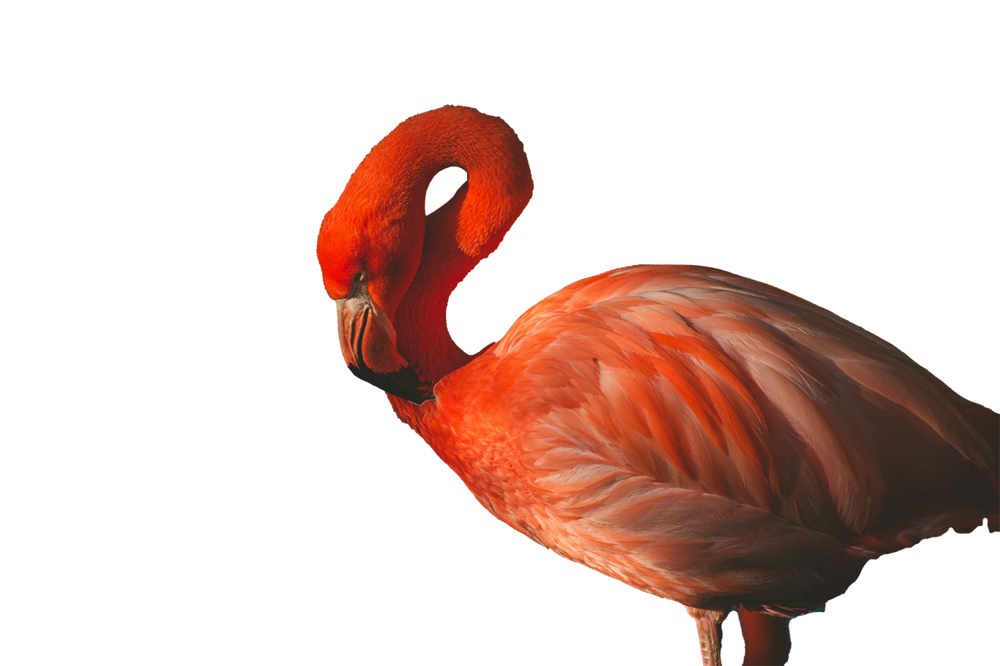
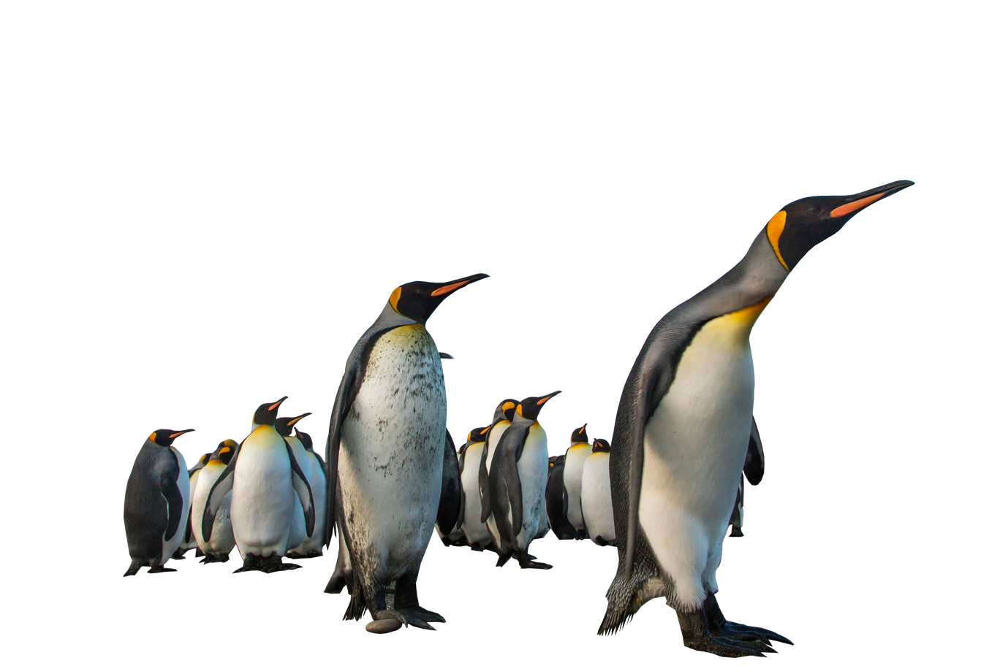

Red Fox

The red fox (Vulpes vulpes) is the largest of the true foxes and one of the most widely distributed members of the order Carnivora, being present across the entire Northern Hemisphere including most of North America, Europe and Asia, plus parts of North Africa. Read More
Parrots

Wildlife Nature
Parrots (Psittaciformes), also known as psittacines are birds with a strong curved beak, upright stance, and clawed feet. They are conformed by four families that contain roughly 410 species in 101 genera, found mostly in tropical and subtropical regions. Read More
Parrots (Psittaciformes), also known as psittacines are birds with a strong curved beak, upright stance, and clawed feet. They are conformed by four families that contain roughly 410 species in 101 genera, found mostly in tropical and subtropical regions. Read More

Leopard
Wildlife Nature
The leopard (Panthera pardus) is one of the five extant species in the genus Panthera. It has a pale yellowish to dark golden fur with dark spots grouped in rosettes. Its body is slender and muscular reaching a length of 92–183 cm (36–72 in) with a 66–102 cm (26–40 in) long tail and a shoulder height of 60–70 cm (24–28 in). Males typically weigh 30.9–72 kg (68–159 lb), and females 20.5–43 kg (45–95 lb). Read More
The leopard (Panthera pardus) is one of the five extant species in the genus Panthera. It has a pale yellowish to dark golden fur with dark spots grouped in rosettes. Its body is slender and muscular reaching a length of 92–183 cm (36–72 in) with a 66–102 cm (26–40 in) long tail and a shoulder height of 60–70 cm (24–28 in). Males typically weigh 30.9–72 kg (68–159 lb), and females 20.5–43 kg (45–95 lb). Read More
Toucan

Wildlife Nature
Toucans are Neotropical members of the near passerine bird family Ramphastidae. The Ramphastidae are most closely related to the American barbets. They are brightly marked and have large, often colorful bills. The family includes five genera and over 40 different species. Read More
Toucans are Neotropical members of the near passerine bird family Ramphastidae. The Ramphastidae are most closely related to the American barbets. They are brightly marked and have large, often colorful bills. The family includes five genera and over 40 different species. Read More
Koala

Wildlife Nature
The koala (Phascolarctos cinereus), sometimes called the koala bear, is an arboreal herbivorous marsupial native to Australia. It is the only extant representative of the family Phascolarctidae and its closest living relatives are the wombats. The koala is found in coastal areas of the mainland's eastern and southern regions, inhabiting Queensland, New South Wales, Victoria, and South Australia. Read More
The koala (Phascolarctos cinereus), sometimes called the koala bear, is an arboreal herbivorous marsupial native to Australia. It is the only extant representative of the family Phascolarctidae and its closest living relatives are the wombats. The koala is found in coastal areas of the mainland's eastern and southern regions, inhabiting Queensland, New South Wales, Victoria, and South Australia. Read More
Flamingos
Wildlife Nature
Flamingos or flamingoes are a type of wading bird in the family Phoenicopteridae, which is the only extant family in the order Phoenicopteriformes. There are four flamingo species distributed throughout the Americas (including the Caribbean), and two species native to Afro-Eurasia. Read More
Flamingos or flamingoes are a type of wading bird in the family Phoenicopteridae, which is the only extant family in the order Phoenicopteriformes. There are four flamingo species distributed throughout the Americas (including the Caribbean), and two species native to Afro-Eurasia. Read More
Chameleon

Wildlife Nature
Chameleons or chamaeleons (family Chamaeleonidae) are a distinctive and highly specialized clade of Old World lizards with 200 species described as of June 2015. The members of this family are best known for their distinct range of colours, being capable of colour-shifting camouflage. The large number of species in the family exhibit considerable variability in their capacity to change colour. Read More
Chameleons or chamaeleons (family Chamaeleonidae) are a distinctive and highly specialized clade of Old World lizards with 200 species described as of June 2015. The members of this family are best known for their distinct range of colours, being capable of colour-shifting camouflage. The large number of species in the family exhibit considerable variability in their capacity to change colour. Read More
Zebras

Wildlife Nature
Zebras (subgenus Hippotigris) are African equines with distinctive black-and-white striped coats. There are three living species: Grévy's zebra (Equus grevyi), the plains zebra (E. quagga), and the mountain zebra (E. zebra). Zebras share the genus Equus with horses and asses, the three groups being the only living members of the family Equidae. Read More
Zebras (subgenus Hippotigris) are African equines with distinctive black-and-white striped coats. There are three living species: Grévy's zebra (Equus grevyi), the plains zebra (E. quagga), and the mountain zebra (E. zebra). Zebras share the genus Equus with horses and asses, the three groups being the only living members of the family Equidae. Read More
Penguins
Wildlife Nature
Penguins are a group of aquatic flightless birds from the family Spheniscidae of the order Sphenisciformes. They live almost exclusively in the Southern Hemisphere: only one species, the Galápagos penguin, is found north of the Equator. Highly adapted for life in the ocean water, penguins have countershaded dark and white plumage and flippers for swimming. Read More
Penguins are a group of aquatic flightless birds from the family Spheniscidae of the order Sphenisciformes. They live almost exclusively in the Southern Hemisphere: only one species, the Galápagos penguin, is found north of the Equator. Highly adapted for life in the ocean water, penguins have countershaded dark and white plumage and flippers for swimming. Read More
Prev
Next